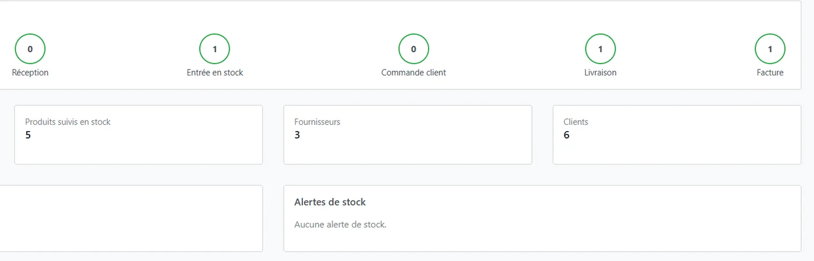

AgrandirGestion commerciale sur mesure
Solution Odoo 18 Community pour un distributeur de matériaux de construction et de quincaillerie.
Du bon de commande fournisseur à la facture client, validé par 25 tests unitaires et 47 vérifications automatisées.
Problème, solution et contribution
- Le problème
- Le client gérait ses achats, son stock et ses ventes avec une application personnalisée. Il avait besoin d'un ERP standard et évolutif, adapté à ses processus et utilisable en français comme en arabe.
- La solution
- Le standard Odoo paramétré pour tout le cycle commercial (achats, réceptions, stock par lot et péremption, ventes, livraisons, facturation, paiements), complété par des modules spécifiques uniquement pour les écarts : codification automatique des produits par catégorie, alertes de stock, pré-remplissage du dernier prix payé par client, 6 documents PDF personnalisés compatibles arabe et un tableau de bord OWL. Aucune modification du cœur d'Odoo, paramétrage versionné et reproductible, 100 % Community.
- Ma contribution
- Projet mené de bout en bout : analyse des processus existants, paramétrage du standard, développement des modules spécifiques, tests unitaires et fonctionnels, et documentation (guide utilisateur, recette, mise en production).
- Odoo 18
- Python
- ORM
- OWL
- QWeb
- PostgreSQL
- Docker
- OCA
Code privé (projet client)